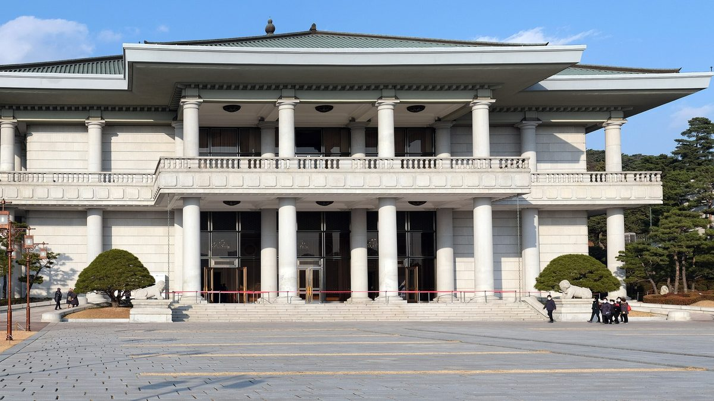
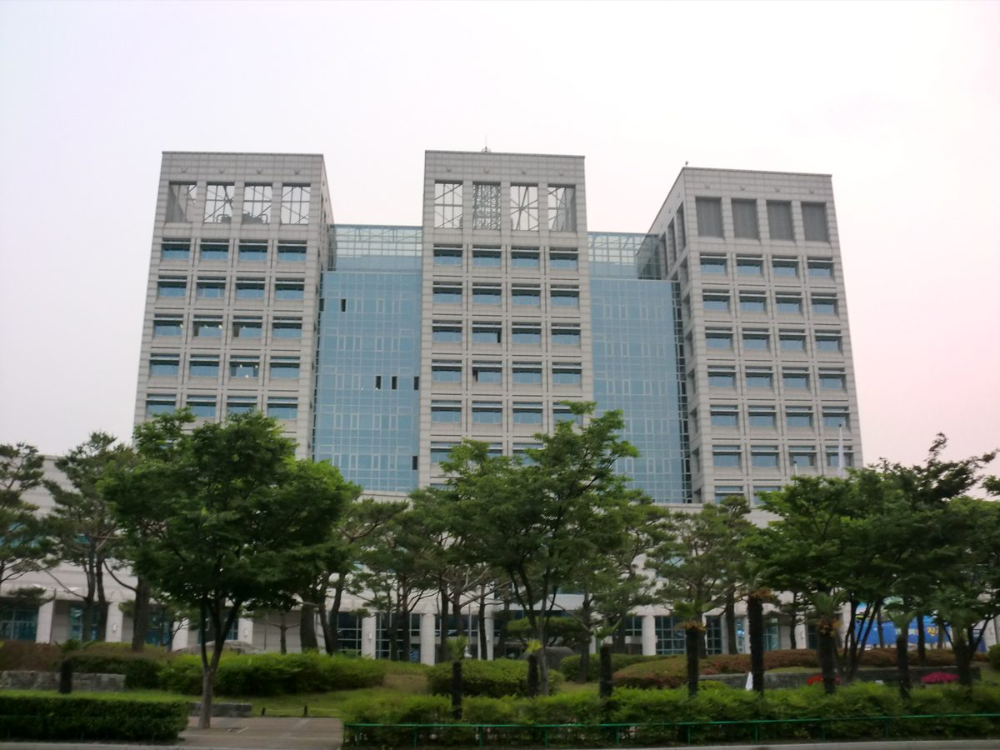
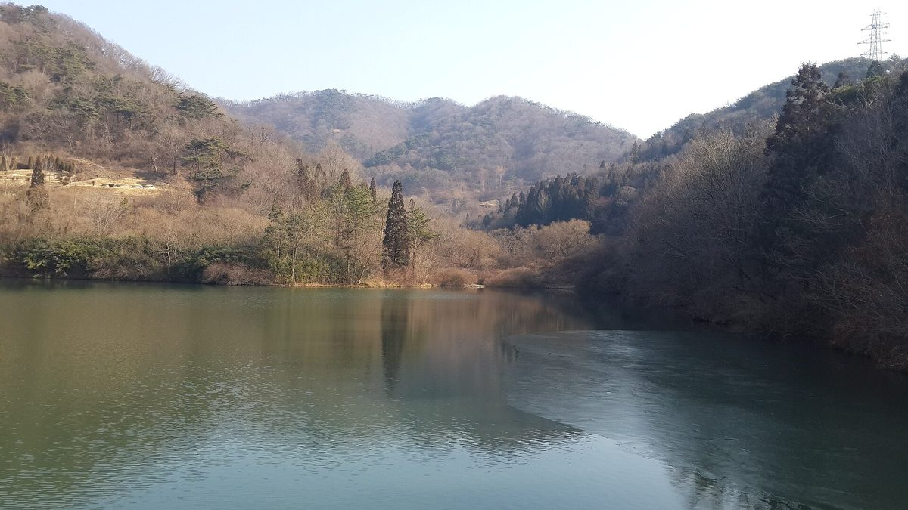
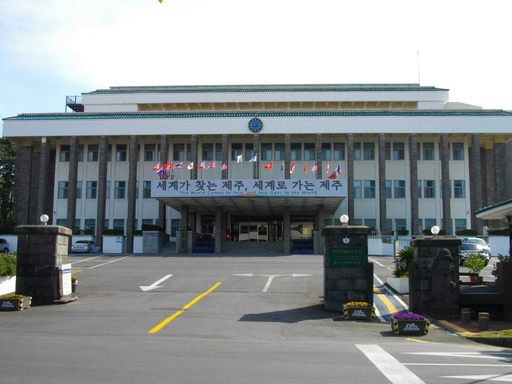
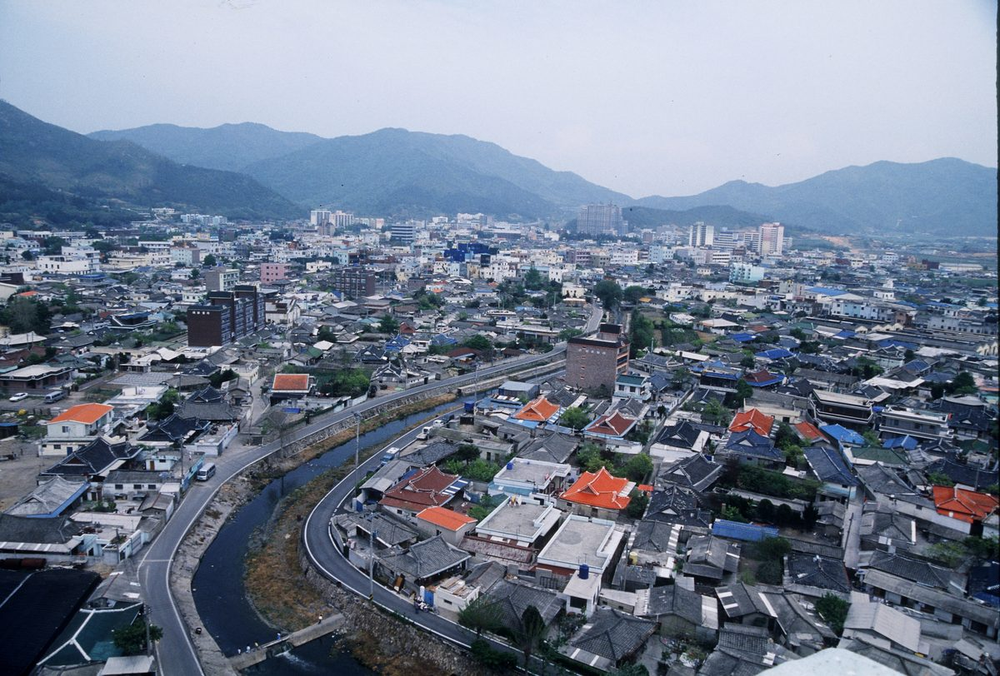
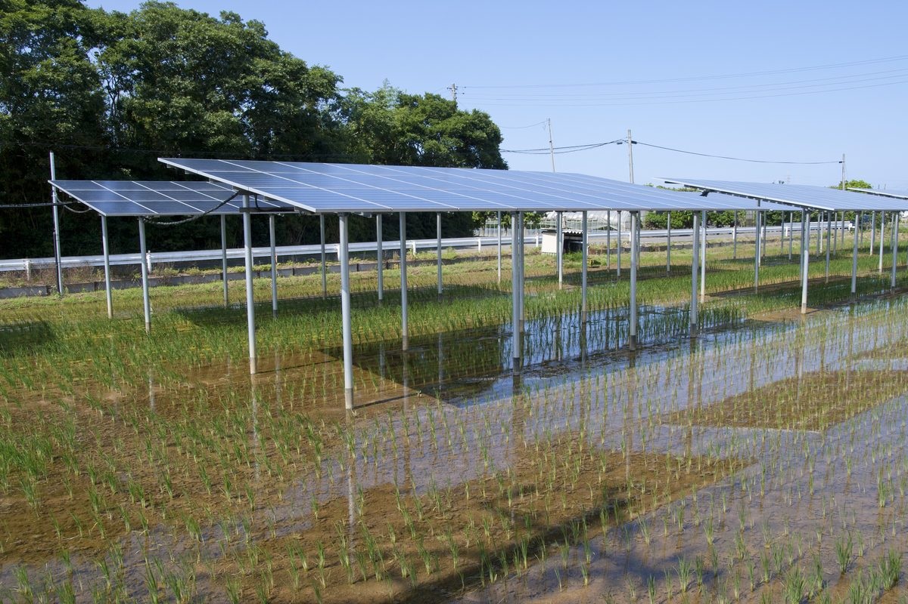
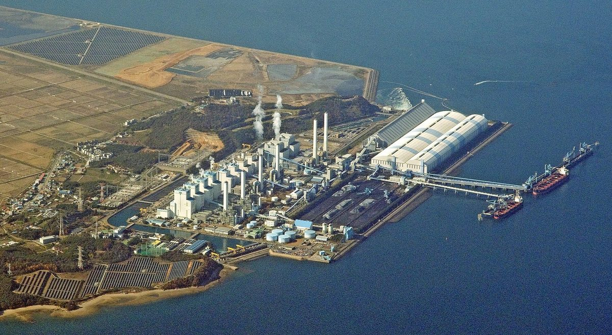
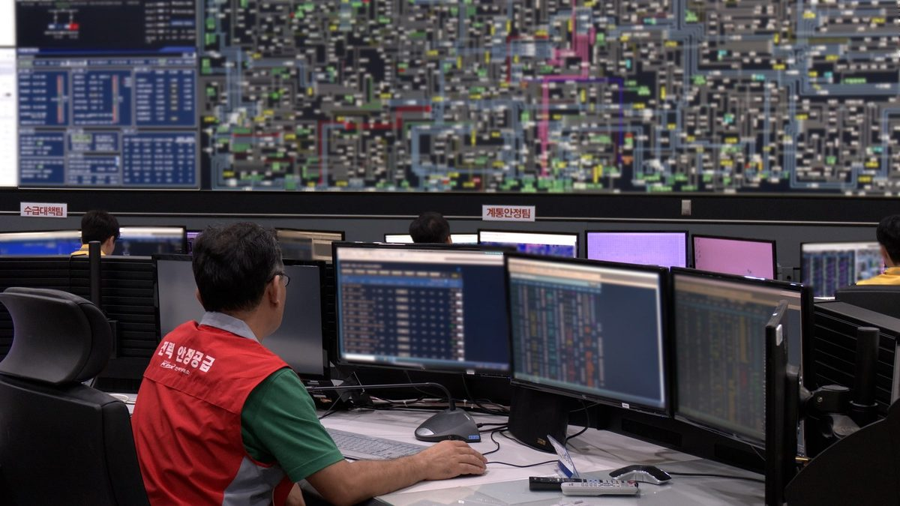

정치
이재명 대통령, 농어민과의 대화서 "태양광은 발전 사업" 농민 지적에 "외부업자 아닌 지역 주민에게 기회 줘야"
권혁정 전국마늘생산자협회 사무총장 "농지는 먹거리 생산에" 문제 제기…대통령은 "반론 안다"며 전력 수요 증가·방치 토지 활용 들어 답해

메가특구 법안 속 원전 전력 직접구매(PPA) 허용 조항 논란…기후부, 동의 곤란에서 신중 접근으로 표현 바뀌어
박해철 의원 자료 공개, 허용 여부는 아직 미정…월성 2호기 전력을 한 기업에 모두 공급하면 다른 수요자의 대체 전력 구입비가 약 3,800억 원 늘 수 있다는 의원실 추산

진주시의회 최민국 도시환경위원장, 주거지역 옥상 태양광 용도제한 재검토 요구…경남서 준주거지역까지 막은 곳은 진주·거제뿐
이격거리 완화 조례안 심사 중 국토부 2015년 지침·2019년 유권해석과 맞지 않을 소지 지적…고성·남해·하동은 옥상 태양광 별도 기준, 시는 안전성·사회적 공감대 확보되면 검토

전남광주특별시의회 의원들, 농어촌공사 재생에너지 보급의무자 지정 제외 요구 성명
기후에너지환경부 시행령 개정안은 재생에너지 설비 10만kW 이상 공공기관 발전사업자도 의무 대상으로…16만5,000kW 보유한 농어촌공사 포함 가능, 의원들은 설비 투자·과징금 부담에 농업인 지원 위축 우려

공공건축물 태양광, 설치 뒤 관리는 사각지대…경기도의회 토론회서 전수조사·통합 모니터링 제안
신미숙 경기도의원 22일 입법토론회, 도내 학교 약 2,500곳 중 약 1,000곳에 설비…계량장치·REGO 활용해 인증서 판매수익을 유지관리비로 쓰자는 방안도, 노후도별 점검주기 차등화·조례 제·개정 검토

용혜인 의원, 제주 도 소유 유휴부지 빌려주고 재생에너지 임대수익 전 도민 배당 제안
제주도 국정감사서 햇빛바람연금 이익 공유 설계 주문…투자 못 하는 도민도 몫 있어야, 도 유휴부지 약 89% 방치 지적하며 재생에너지법 제26조 장기·저가 임대 근거 들어

발전 5사 중 갈등관리 매뉴얼·교육 함께 갖춘 곳은 남동발전뿐…탈석탄·재생에너지 전환 앞두고 대비 미흡
박해철 의원, 에너지 공기업 9곳 자료 분석…동서·중부발전은 계획·교육 없어 앞으로 마련, 남부발전은 12쪽 운영세칙만 있고 교육·계획 없어 형식적 수준 평가, 다대포 해상풍력선 주민 찬반 갈등

국감서 BS그룹 해남 솔라시도 개발이익 특혜 의혹 제기…산업부 장관 꼼꼼히 살피겠다
구자근 의원, 산단 이익률 33%·수익 2,500억 원 담긴 내부 문건 공개하고 변전소 조기 건설·RE100 특별법 조항 의혹도 제기…위법 확인 안 된 의혹 단계, BS그룹 입장은 확인되지 않아

국감서 영농형 태양광 시행령 "농업회사법인 참여 지역 과도하게 묶어" 지적
주철현 의원 "국가 간척지 없는 12개 시도는 사업 불가"…송미령 장관 "범위 확대 살펴보고 지방정부와 논의"

아산시의회 상임위, 태양광 200m·풍력 1,500m 입지기준 조례안 통과…세대주 80% 동의 마을사업은 이격거리 예외
천철호 의원 대표발의 도시계획 조례 개정안 건설도시위원회 통과, 문화유산 보호구역·관광지 등 입지 제한 대상 추가…주민참여형·지붕형·햇빛소득마을도 예외, 30일 본회의 의결 남아

발전 5사 통합 특별법 국회 심사 본격화…한전 자회사냐 정부 직접 출자냐
최기상안은 한전 100% 자회사 한국발전, 다른 의원안은 정부 전액·51% 이상 출자…정부는 2027년 10월 출범 목표

국감서 재생에너지 계통 안정성 질의…접속용량 75% 호남 집중, 그리드포밍 인버터 약 10%
한전, 성능개선 대상 90kW 이상에서 20kW 이상으로 넓혀 2029년까지 보완 계획…개선 비용은 발전사업자 부담 방향

政治
イ・ジェミョン大統領、農漁民との対話で「太陽光は発電事業」との農民の指摘に「外部業者ではなく地域住民に機会を」
クォン・ヒョクチョン全国ニンニク生産者協会事務総長が「農地は食料生産に」と問題提起…大統領は「反論は承知」としつつ電力需要の増加と放置された土地の活用を挙げて答える
メガ特区法案の原発電力直接購入（PPA）容認条項が論議に…気候部の表現、同意困難から慎重な接近へ
パク・ヘチョル議員が資料を公開、容認するかどうかは未定…月城2号機の電力を1社にすべて供給すれば他の需要家の代替電力購入費が約3,800億ウォン増えうるとの議員室試算
晋州市議会のチェ・ミングク都市環境委員長、住居地域の屋上太陽光の用途制限見直しを要求…慶尚南道で準住居地域まで規制するのは晋州・巨済だけ
離隔距離を緩和する条例案の審査中、国土交通部の2015年指針・2019年有権解釈と食い違うおそれを指摘…固城・南海・河東は屋上太陽光に別の基準、市は安全性と社会的合意が確保されれば検討
全南光州特別市議会の議員ら、韓国農漁村公社を再生可能エネルギー供給義務者の指定から外すよう求める声明
気候エネルギー環境部の施行令改正案は再生可能エネルギー設備10万kW以上の公共機関発電事業者も義務対象に…16万5,000kWを持つ農漁村公社も含まれる可能性、議員らは設備投資・課徴金の負担で農業者支援が縮むと懸念
公共建築物の太陽光、設置後の管理は死角に…京畿道議会の討論会で全数調査・統合モニタリングを提案
シン・ミスク京畿道議員が22日に立法討論会、道内の学校約2,500校のうち約1,000校に設備…計量装置・REGOを活用し証書の販売収益を維持管理費に充てる案も、老朽度別の点検周期の差別化や条例の制定・改正を検討
ヨン・ヘイン議員、済州道所有の遊休地を貸して再生可能エネルギーの賃料収入を全道民に配当するよう提案
済州道の国政監査で太陽光・風力年金の利益共有の設計を注文…投資できない道民にも取り分を、道の遊休地の約89%が放置と指摘し、再生可能エネルギー法第26条の長期・低額賃貸の根拠を示す
発電5社のうち紛争管理マニュアルと教育をともに備えるのは南東発電だけ…脱石炭・再エネ転換を前に備え不足
パク・ヘチョル議員がエネルギー公企業9機関の資料を分析…東西・中部発電は計画・教育がなく今後整備、南部発電は12ページの運営細則だけで教育・計画なく形式的と評価、多大浦洋上風力では住民の賛否が対立
国政監査でBSグループの海南ソラシド開発利益をめぐる特恵疑惑提起…産業通商部長官、詳しく調べる
具滋根議員が産業団地の利益率33％・収益2,500億ウォンを記した内部文書を公開、変電所の早期建設やRE100特別法の条項をめぐる疑惑も提起…違法性は確認されていない疑惑提起の段階、BSグループの立場は確認できず
牙山市議会常任委、太陽光200m・風力1,500mの立地基準条例案を可決…世帯主80%同意の村事業は離隔距離の例外に
チョン・チョルホ議員が代表発議した都市計画条例改正案が建設都市委員会を通過、文化遺産保護区域・観光地などを立地制限対象に追加…住民参加型・屋根置き・太陽光所得村も例外、30日の本会議議決を残す
国政監査で再エネの系統安定性を質疑…接続容量の75％が湖南に集中、グリッドフォーミングインバーターは約10％
韓電、性能改善の対象を90kW以上から20kW以上に広げ2029年までに補完する計画…改善費用は発電事業者負担の方向
政治
韩国总统李在明在与农渔民对话中回应农民"光伏是发电事业"的指摘："应把机会给当地居民，而不是外来业者"
全国大蒜生产者协会事务总长Kwon Hyuk-jeong提出"农地应用于粮食生产"…总统表示"知道有反对意见"，并以电力需求增长和闲置土地利用作答
韩国超大特区法案中允许直接购买核电(PPA)条款引发争议…气候部表态由难以同意转为需审慎对待
Park Hae-cheol议员公开相关资料，是否允许尚未确定…议员办公室估算，若月城2号机电力全部供给一家企业，其他用户的替代购电费用可能增加约3,800亿韩元
晋州市议会城市环境委员长Choi Min-guk要求重新审视住宅区屋顶太阳能用途限制，庆尚南道连准住宅区也限制的只有晋州和巨济
审议放宽间距限制的条例案时指出，现行标准可能与国土交通部2015年指南和2019年有权解释不符；固城、南海、河东对屋顶太阳能另设标准，市政府表示安全性和社会共识得到保障后将予研究
全南光州特别市议会议员发表声明，要求将韩国农渔村公社排除在可再生能源供应义务者指定范围之外
气候能源环境部施行令修正案拟将拥有10万千瓦以上可再生能源设备的公共机构发电企业也列为义务对象，拥有16万5,000千瓦设备的农渔村公社可能被纳入；议员们担心设备投资和罚款负担会削弱对农民的支持
公共建筑太阳能装后管理成盲区，京畿道议会研讨会提议全面普查和统一监测
京畿道议员Shin Mi-suk 22日举办立法研讨会，道内约2,500所学校中约1,000所装有设备；有人提议安装计量装置、利用REGO制度，以证书销售收入充当维护费；将研究按老化程度区分检查周期并制定或修订条例
国会议员Yong Hye-in提议出租济州道有闲置地，把可再生能源租金收入分红给全体道民
在济州道国政监查中要求细化阳光风力年金的利益共享设计，不能投资的道民也应有份；指出道有闲置地约89%被荒置，并援引可再生能源法第26条长期低租金出租的依据
五大发电公司中同时具备冲突管理手册和培训的只有南东发电，面对去煤和可再生能源转型准备不足
国会议员Park Hae-cheol分析9家能源国企资料：东西发电和中部发电没有计划和培训、将来再制定，南部发电只有12页运营细则、没有培训和计划被评为流于形式，多大浦海上风电项目出现居民支持与反对的冲突
韩国国政监查提出BS集团海南Solaseado开发利益特惠疑点…产业通商部长官称将仔细审视
议员Koo Ja-keun公开载有产业园区利润率33%、收益2,500亿韩元的内部文件，并对变电站提前建设和RE100特别法条款提出疑问…属尚未确认违法的疑点提出阶段，BS集团的立场尚未得到确认
牙山市议会常委会通过太阳能200米、风电1,500米选址标准条例案，户主80%同意的村庄项目可免除间距限制
Cheon Cheol-ho议员领衔提出的城市规划条例修正案在建设城市委员会获得通过，文化遗产保护区、旅游地等新增为选址限制对象；居民参与型、屋顶型和阳光收入村也属例外，尚待30日全体会议表决
韩国五大发电公司合并特别法进入国会审议，韩电子公司还是政府直接出资成焦点
Choi Ki-sang议员案为韩电100%子公司韩国发电，其他议员案主张政府全额或51%以上出资，政府目标2027年10月成立
Politics
President Lee Jae-myung answers farmers' "solar is a power business" criticism: give the chance to local residents, not outside developers
Kwon Hyuk-jeong of the National Garlic Producers Association says farmland should grow food; the president says he knows the objection and cites rising power demand and the use of idle land
Clause allowing direct nuclear power purchases (PPAs) in Korea's mega special zone bill draws controversy as climate ministry softens wording from hard to agree to careful approach
Rep. Park Hae-cheol releases ministry documents; no decision yet on whether to allow it. His office estimates that supplying all of Wolsong Unit 2's output to one company could raise other users' replacement power costs by about 380 billion won
Jinju council committee chair Choi Min-guk calls for review of zoning limits on rooftop solar in residential areas; only Jinju and Geoje in South Gyeongsang also bar semi-residential zones
Raised during review of an ordinance easing setback rules, he said the city's standards may conflict with the land ministry's 2015 guidelines and 2019 interpretation; Goseong, Namhae and Hadong have separate rooftop rules, and the city says it will consider change once safety and public consensus are secured
Jeonnam-Gwangju Special City Council members issue statement demanding Korea Rural Community Corporation be excluded from renewable supply obligation
Climate ministry's draft decree would make public-sector power producers with 100,000kW or more of renewable capacity obligated suppliers, which could include the corporation and its 165,000kW; members warn investment and penalty burdens could shrink support for farmers
Upkeep of solar on public buildings falls through the cracks; Gyeonggi council forum proposes full survey and integrated monitoring
Councilor Shin Mi-suk's legislative forum on the 22nd hears that about 1,000 of roughly 2,500 schools in the province have panels; ideas include meters and the REGO system so certificate sales cover maintenance, inspection cycles by equipment age and new or revised ordinances
Rep. Yong Hye-in proposes leasing Jeju's idle provincial land for renewables and paying the rent to all residents as dividends
At the Jeju audit she urged careful design of benefit-sharing under the Sunlight and Wind Pension so residents who cannot invest also get a share, noting about 89% of idle provincial land sits unused and citing Article 26 of the Renewable Energy Act on long-term, low-rent leases
Only Korea South-East Power among five generating companies runs both a conflict-management manual and training, leaving gaps ahead of coal phase-out and renewables shift
Rep. Park Hae-cheol's review of data from nine energy public companies finds East-West and Midland Power have no plans or training yet, while Southern Power has only a 12-page set of rules with no training or plans, judged a formality; residents are split over the Dadaepo offshore wind project
Audit hearing raises allegations of favoritism toward BS Group over development gains at Haenam's Solaseado; industry minister says he will look closely
Lawmaker Koo Ja-keun disclosed an internal document projecting a 33% margin and 250 billion won in profit from an industrial complex, and questioned a fast-tracked substation and RE100 special act provisions; the claims are unproven allegations, and BS Group's position could not be confirmed
Parliamentary audit says Korea's agrivoltaics decree draws agricultural companies' project areas too narrowly
Rep. Joo Chul-hyun says 12 provinces and cities without state reclaimed land are shut out; Minister Song Mi-ryung promises to review a wider scope and consult local governments
Asan council committee passes siting rules of 200m for solar and 1,500m for wind, exempting village projects backed by 80% of households
Ordinance amendment sponsored by Councilor Cheon Cheol-ho clears the Construction and Urban Committee, adding heritage zones and tourist areas to restricted sites; resident-participation, rooftop and Sunlight Income Village projects also exempt, plenary vote due on the 30th
Parliamentary audit calls for an urban Sunlight Income Village model open to apartment residents
Committee chair presses Korea Energy Agency; agency says housing types and land conditions differ and need more review
Korea's bill to merge five power generators enters parliamentary review as KEPCO subsidiary vs direct state ownership is debated
Rep. Choi Ki-sang's bill makes Korea Power a wholly owned KEPCO subsidiary while rival bills call for full or 51%-plus state funding; government targets an October 2027 launch
Parliamentary audit questions grid stability as 75% of Korea's renewable connections sit in Honam and grid-forming inverters make up about 10%
KEPCO plans to widen upgrade requirements from 90 kW to 20 kW and above by 2029, with costs expected to fall on generators